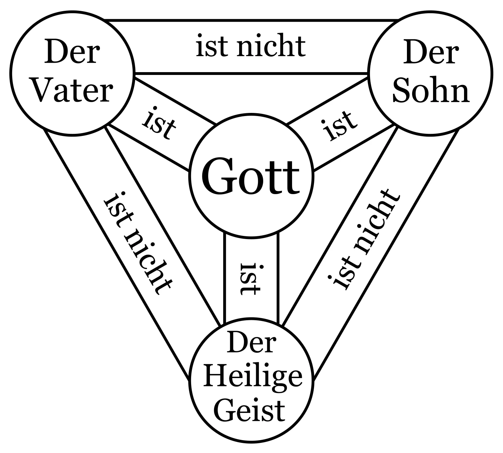

Von den Christen und Juden lernen
Im Koran werden die Fehler vergangener Gemeinschaften als Lehren für uns dargestellt. Wenn wir uns die heute noch existierenden Religionen Christentum und Judentum ansehen, können wir schnell Gemeinsamkeiten in den begangenen Fehlern erkennen. Zu diesen grundlegenden Fehlern gehören: die übermäßige Verehrung von Propheten und Geistlichen, die Schaffung von Büchern außerhalb des göttlichen Buches und die Spaltung der Religion in Sekten/Rechtsschulen.
Die Ablehnung des Buchdrucks und des Gebets in der eigenen Sprache durch Geistliche und Sekten im Christentum ist ein Beispiel für religiösen Fanatismus. Dies wird durch die Aussagen eines christlichen Geistlichen deutlich: „Es stimmt, dass die Erfindung des Buchdrucks die Verbreitung von Büchern und die Entwicklung von Bildung gefördert hat. Aber es ist ebenso wahr, dass dies zu Meinungsverschiedenheiten geführt hat. Infolgedessen begannen die Menschen, über die von der Kirche festgelegten Glaubenssätze nachzudenken und Fragen zu stellen. Sie lesen die religiösen Bücher, verstehen sie und beten in ihrer eigenen Sprache. Dadurch stellen sie sich die Frage, ob es überhaupt noch Geistliche braucht. Wenn jeder in seiner eigenen Sprache und nach seinem eigenen Verständnis Gott anbeten würde... eine solche Situation wäre sehr nachteilig für die Klasse der Geistlichen. Es muss daher eine Voraussetzung sein, dass die Grundlagen des Glaubens niemandem außerhalb des Klerus bekannt sind.“510 Der atheistische Autor Arsel zieht aus diesem Zitat zwar berechtigte Schlüsse, macht jedoch den Fehler, diese Kritik von den „Geistlichen“ auf den Islam selbst auszuweiten. Die Dominanz der Kirche, die den wissenschaftlichen Fortschritt blockierte, Religionskriege auslöste und mit Institutionen wie Exkommunikation (Excommunicatio), Ablasshandel (Commercium Indulgentiarum) und Inquisition (Inquisitio) die Menschen unterdrückte, war die treibende Kraft hinter der Ablehnung des Buchdrucks und der Gottesdienste in der eigenen Sprache. Die Kirche beanspruchte sogar das Recht, die Vergebung der Sünden (Taufe, Beichte) zu kontrollieren, was zu einem der größten Missbräuche im Namen der Religion führte.
Die Anhänger des Koran sind sehr gut darin, die Abweichungen der Christen und Juden zu erkennen und sie sehr vernünftig zu kritisieren. Leider zeigen viele dieser Kritiker nicht den gleichen gesunden Menschenverstand bei der Kritik an den Abweichungen von der von Gott gesandten Religion in der islamischen Welt. Gott sei Dank konnten wir den Bereich des Glaubens gut vor Erfindungen wie der christlichen Trinität schützen, aber das sollte uns nicht darüber hinwegtäuschen, dass in der Praxis viele Erfindungen in die „Religion“, die als „Islam“ präsentiert wird, eingeführt wurden.
In den Koranversen 6:154 und 7:145 wird deutlich, dass die Thora, ähnlich wie der Koran, detailliert offenbart wurde. Doch trotz der vorhandenen detaillierten Thora schufen die Juden mit den Werken „Mischna“ und „Gemara“ religiöse Ergänzungen, die als heilig angesehen wurden. Dabei war ihre Religion bereits in der Thora ausführlich erklärt. Nach der Erklärung des Korans finden die Juden ihre Urteile in der Thora und die Christen ihre Urteile in der Bibel (inwieweit diese Bücher ihre Authentizität bewahrt haben, ist ein wichtiges Thema, das in diesem Buch jedoch nicht erörtert werden soll).

Das Vater-Sohn-Problem im Christentum
Das größte Problem im Christentum ist die Abweichung, Jesus als „Gottes Sohn“ zu betrachten und die Trinitätslehre. Die ältesten bekannten Bibeltexte sind auf Lateinisch. Ein Original des Evangeliums in der Sprache, in der es Jesus offenbart wurde, ist nicht vorhanden. Daher wissen wir nicht, wie die ursprünglichen Begriffe lauteten, die ins Lateinische als „Vater“ und „Sohn“ übersetzt wurden. Dennoch zeigt selbst die lateinische Übersetzung, dass der Begriff „Sohn“ nicht ausschließlich für Jesus, sondern für alle geliebten Diener Gottes verwendet wurde. Ebenso wird „Vater“ nicht nur als Vater Jesu, sondern als Vater aller Menschen beschrieben: „Damit erweist ihr euch als Söhne eures Vaters im Himmel.“ Mt 5,45511
„Jesus sagte zu ihr: »Halte mich nicht fest! Ich bin noch nicht zum Vater in den Himmel zurückgekehrt. Geh zu meinen Brüdern und sag ihnen, dass ich zu ihm zurückkehre – zu meinem Vater und eurem Vater, zu meinem Gott und eurem Gott.«“
Joh 20,17512
Das bedeutet, dass jemand, der die heutige Bibel in der vorliegenden Übersetzung liest, den Begriff „Jesus, der ewige Sohn Gottes“ in der Bibel so nicht finden kann. Denn die Verwendung des Begriffs „Sohn“ für alle Menschen zeigt, dass es sich um eine metaphorische Ausdrucksweise handelt. Unserer Vermutung nach wurde im ursprünglichen Evangelium ein Begriff, der eher „Diener“ bedeutet, als „Sohn“ und ein Begriff, der eher „Schöpfer“ oder „Herr“ bedeutet, als „Vater“ übersetzt. Trotz dieser Umstände lässt die heutige Bibel durchgängig die Begriffe „Vater“ und „Sohn“ stehen, was zeigt, dass der ursprüngliche Ausdruck durch Übersetzung verzerrt wurde. Ein Vergleich der heutigen Bibelübersetzungen von Joh 9,35 zeigt, wie stark das Christentum durch Übersetzungen verfälscht wurde:513
„Jesus hörte, dass sie ihn ausgestossen hatten; und als er ihn traf, sprach er: Glaubst du an den Menschensohn?“ Züricher Bibel, Joh 9,35
„Jesus hörte, dass sie ihn ausgestoßen hatten, und als er ihn fand, sprach er zu ihm: Glaubst du an den Sohn Gottes?“ Schlachter-Bibel, Joh 9,35
„Jesus hörte, dass sie den Geheilten hinausgeworfen hatten. Als er ihn wieder traf, fragte er ihn: »Glaubst du an den Menschensohn?«“ Neue Genfer Übersetzung (NGÜ), Joh 9,35
Beachten Sie, wie in der zweiten Übersetzung (Schlachter-Bibel) die in den übrigen beiden Übersetzungen verwendete Bezeichnung „Menschensohn“ zu „Sohn Gottes“ wurde. Diese Verzerrung zeigt sich auch in den Begriffen „Vater“ und „Sohn“ in Matthäus 23,9:
„Nennt auch niemand auf Erden euren Vater; denn einer ist euer Vater, der im Himmel ist.“ Schlachter-Bibel, Mt 23,9514
Die Kirche ist die Hauptverantwortliche
Wie man sieht, heißt es in der Übersetzung, dass man niemanden auf der Erde „Vater“ nennen soll. Allerdings ist „Vater“ der Name, mit dem jeder seinen biologischen Blutsvater bezeichnet; die Tatsache, dass diese Bezeichnung für niemanden außer Gott verwendet werden soll, nicht einmal für den eigenen Vater, zeigt, dass es sich bei dieser Bezeichnung nicht um „Vater“ im heutigen Sinne handelt. Wie wir bereits festgestellt haben, sind wir der Meinung, dass das mit „Vater“ übersetzte Wort ursprünglich ein Wort wie „Schöpfer“ oder „Herr“ für Gott war, aber durch Übersetzungen wurde dieses Wort zum heutigen Wort „Vater“. Die Übersetzungen tragen jedoch nur eine sekundäre Schuld. Denn jemand, der objektiv urteilt und sieht, dass diese Begriffe für alle Menschen verwendet werden, könnte leicht zu dem Schluss kommen, dass sie metaphorisch gemeint sind. (Einige Gruppen innerhalb des Christentums, wenngleich in der Minderheit, teilen diese Ansicht.) Die Kommentatoren der heutigen katholischen, orthodoxen und die meisten protestantischen Kirchen besagen jedoch, dass diese Begriffe für alle Menschen metaphorisch und für Jesus im wörtlichen Sinne verwendet wurden. Somit tragen Katholizismus, Orthodoxie und ähnliche Konfessionen sowie die Entscheidungen früherer Konzilien die Hauptschuld daran, dass Jesus zum „Sohn Gottes“ erklärt wurde. Wir sind der Meinung, dass diese Ansätze, die lediglich die Interpretationen dieser Sekten und früheren Konzilien sind, von Christen, die versuchen, die Religion nur aus den vorhandenen Evangelien zu lernen, nicht erreicht werden können. Jahrelang haben die Menschen das Christentum durch die Erzählungen der kirchlichen Institution gelernt. So wie der Islam durch die Überlieferungen der sunnitischen und anderer schiitischer Sekten wie Hanafi und Shafi’i degeneriert ist, ist auch das Christentum durch die Hegemonie der katholischen und orthodoxen Sekten degeneriert. Für das Christentum ist die Situation noch schwieriger. Denn man kann nicht sagen, dass die vorhandenen Evangelien ihre Originalität bewahrt haben. Da jedoch der Koran im Original vorliegt, ist es einfacher, den Koran aufzusuchen und die Ergänzungen und Verzerrungen zu korrigieren und zwischen dem wahren Islam und der verfälschten Religion zu unterscheiden.
Wenn wir die Methoden dieser Verfälschungen untersuchen, stellen wir fest, dass die durch Konfessionen verursachte Verfälschung des Christentums Ähnlichkeiten mit den durch Rechtsschulen/Sekten herbeigeführten Veränderungen im Islam aufweist. Die heutigen Evangelien (trotz ihrer Verzerrung durch Übersetzungen) wurden beiseitegelegt, und die Kirche hat ihre eigenen Interpretationen über die Evangelien gestellt. Hierbei dürfen wir nicht vergessen, dass die Kirche eine Gemeinschaft von Priestern ist. Es war auch die Gemeinschaft jüdischer Priester, die die Kreuzigung Jesu beschloss. Diejenigen, die im Namen des „Islam“ Ergänzungen vornahmen, waren wiederum die sogenannten Hadith-Gelehrten und Imame der Rechtsschulen; sprich Kleriker des Sunniten- und Schiitentums. Wir verstehen sehr gut die Ketzerei jüdischer Priester, die Jesus töten wollten, oder von Geistlichen wie Paulus, die Jesus verherrlichten. Doch wenn es um die Erfinder von Hadithen oder Verfasser von Handbüchern/Katechismus geht, fällt es uns schwer, sie nicht zu glorifizieren. Gleichzeitig wundern wir uns sehr, warum Christen Paulus und Juden ihre mörderischen Priester weiterhin verteidigen! Die Geschichte wiederholt sich, wenn auch mit Nuancen. Und weil keine Lehren aus vergangenen Generationen gezogen werden, werden dieselben Fehler zu den Ursachen neuer Katastrophen. Am meisten schaden dem Glauben jene Geistlichen, die als Rabbiner, Priester oder Imame auftreten.515
Den größten Schaden fügen der Religion verlogene Geistliche zu
Leider hören viele Muslime diese Verse nur wie Märchen an. Sie ziehen daraus nicht die Schlussfolgerung: „Wenn Gott uns die Zustände dieser früheren Völker berichtet, dann tut Er das, weil auch wir in die gleichen Fehler verfallen könnten.“ Heute sind wir Zeitzeugen ähnlicher Fehler. Wie die Priester im Christentum neue religiöse Vorschriften geschaffen haben, so haben auch Imame im Islam durch Fatwas, Idschtihads (eigene Rechtsurteile) und die Lehren der Rechtsschulen neue, nicht im Islam vorhandene Gesetze eingeführt. Das heißt, die Klasse der Glaubensmänner, sprich der Klerus, hat sich das Recht angemaßt, Gesetze zu erlassen, was eigentlich nur Gott vorbehalten ist. Wie Katholiken, Protestanten und Orthodoxe ihre Priester und Heiligen trotz allem verteidigen und ihre Geschichten von Heiligkeit und Überlegenheit erzählen, um ihre Verfälschung des Christentums zu rechtfertigen, so wird auch ein Teil der sunnitischen und schiitischen Kleriker und Scheichs der Sufi-Orden durch ähnliche Geschichten über Heiligkeit und Überlegenheit gerechtfertigt.
Ein Beispiel dafür, wie die Kirche die Religion für materielle Interessen missbrauchte, beschreibt der südafrikanische Nobelpreisträger Desmond Tutu eindrucksvoll:
„Als die Missionare nach Südafrika kamen, hatten wir das Land und sie die Bibel. Dann sagten sie uns: ‚Lasst uns die Augen schließen und beten.‘ Als wir die Augen öffneten, hatten sie das Land und wir die Bibel.“516 Genauso wie einige Priester und Rabbiner im Namen der Religion die Menschen finanziell ausbeuten, stehen auch viele der sunnitischen und schiitischen Scheichs, Prediger etc. diesen in nichts nach. In all diesen Szenen gibt es sowohl für Juden als auch für Christen und uns viele Lehren. Keine dieser drei Religionen wird jedoch in der Lage sein, ihr wahres Wesen zu erkennen, solange sie die Rechtsschulen/Sekten und deren Gründer nicht hinter sich lassen. Zunächst müssen alle rechtlichen Auslegungen der Rechtsschulen, alle zusätzlichen Werke wie die Mischna, Hadith-Sammlungen oder Briefe bestimmter Kleriker beiseite gelegt werden, und einzig Gottes Buch muss auf den Tisch gelegt werden, um die Lösung zu finden. Da wir den ursprünglichen Koran in unseren Händen halten, haben wir viel bessere Chancen, eine Lösung zu finden. Wir sind überzeugt, dass auch Juden und Christen mit derselben Methode dem wahren Glauben Gottes näherkommen können. Leider ist das, was heute weit verbreitet als „Religion“ bezeichnet wird, weder das Judentum der Thora, noch das Christentum des Evangeliums, noch der Islam des Korans. Die Rechtsschulen und die Bücher der „Heiligen“, Rabbiner und Priester haben Gottes Bücher, traurigerweise, verdrängt. Die Ursache für Fanatismus in diesen drei Religionen ist dieselbe: Das Menschliche wurde mit einem heiligen Mantel versehen und vor die eigentliche Heiligkeit von Gottes Buch gestellt. Ein grundlegender Mechanismus des Missbrauchs in den Religionen ist die Verzerrung oder Verschleierung der klaren Wahrheiten der heiligen Bücher durch Auslegung oder Verzerrung der Bedeutung der Wörter.
Hinweise auf den Propheten Muhammad in der Bibel und der Thora
Lassen Sie uns die Verse aus der heutigen Thora und Bibel untersuchen, die als Hinweise auf den Propheten Muhammad gedeutet wurden:
„Ich werde alle Nationen erschüttern, und der Himada aller Nationen wird kommen; und ich werde dieses Haus mit Ruhm füllen, spricht der Herr der Heerscharen. Mein ist das Silber, und mein ist das Gold, spricht der Herr der Heerscharen. Die Herrlichkeit dieses letzten Hauses wird größer sein als die des ersten, spricht der Herr der Heerscharen; und an diesem Ort werde ich Frieden (shalom) geben, spricht der Herr der Heerscharen.“
AT Haggai 2,7-9
Das im obigen Vers erwähnte Wort „Himada“ stammt im Alt-Hebräischen von der Wurzel „h-m-d“. Im Koran wird erwähnt, dass Jesus seinem Volk von einem Propheten namens „Ahmad“ berichtet hat, der nach ihm kommen wird (siehe Koran 61:6). Der Name „Ahmad“ hat dieselbe Wurzel (h-m-d) wie „Muhammad“ und bedeutet „der Gepriesene“. Es könnte also angenommen werden, dass mit dem Hinweis auf einen Propheten namens „Ahmad“ ein Prophet gemeint ist, dessen Name die Bedeutung „der Gepriesene“ trägt, was wiederum auf Muhammad hindeutet. Zu diesem Thema schreibt Prof. David Benjamin (alias Abd al-Ahad Dawud):
„Wenn ihr mich liebt, so werdet ihr meine Gebote halten. Und ich werde den Vater bitten, und er wird euch einen anderen Paraklet geben, dass er bei euch sei in Ewigkeit.“ NT Joh 14,15-16
„Doch ich sage euch die Wahrheit: Es ist zu eurem Wohl, dass ich weggehe; denn wenn ich nicht weggehe, wird der Paraklet nicht zu euch kommen. Wenn ich aber gehe, werde ich ihn zu euch senden. Und wenn er kommt, wird er die Welt überführen von Sünde und von Gerechtigkeit und von Gericht.“ NT Joh 16,7-8
„Und das ist das Zeugnis des Johannes, als die Juden Priester und Leviten aus Jerusalem zu ihm sandten, damit sie ihn fragten: ‚Wer bist du?‘ Und er bekannte und leugnete nicht; und er bekannte: ‚Ich bin nicht der Christus.‘ Und sie fragten ihn: ‚Was denn? Bist du Elia?‘ Und er sagt: ‚Ich bin es nicht.‘ ‚Bist du der Prophet?‘ Und er antwortete: ‚Nein.‘“ NT Joh 1,19-21
Wie aus den oben genannten Bibelversen ersichtlich ist, wird in der Bibel jemand angekündigt, der nach Jesus kommen wird. Es gibt jedoch keinen Hinweis darauf, dass Jesus der letzte Prophet ist und kein weiterer Prophet kommen wird. In Johannes 1,19-21 wird sogar deutlich, dass die Menschen neben Elia und Jesus (dem Christus/Messias) auf einen weiteren Propheten warteten. Wer also könnte nach Jesus kommen, um den Menschen Gott zu offenbaren und ihn zu verkünden? Ein Blick in die Geschichte zeigt, dass es außer dem Propheten Muhammad keine andere bedeutende Persönlichkeit gibt, die diese Rolle erfüllt.
Professor Dr. Maurice Bucaille kritisiert die Erklärung, dass der in Johannes erwähnte „Paraklet“ der Heilige Geist (Gabriel) sei, und lehnt diese Ansicht ab. Er argumentiert, dass mit dem „Paraklet“ ein Prophet gemeint sei, der wie Jesus ein Mensch ist. Bucaille erklärt: „Es zeigt sich also, dass die Mitteilung an die Menschen, von der hier die Rede ist, keineswegs aus einer Inspiration besteht, die auf das Konto des Heiligen Geistes geht, sondern sie hat einen physikalischen Charakter, der wegen des Begriffs “Ton aussenden” offensichtlich ist, der sich mit jenem griechischen Wort verbindet, das die Mitteilung beschreibt.
Die beiden griechischen Verben akouô (hören)518 und laleô (sprechen)519definieren also konkrete Handlungen, die nur ein mit Hör- und Sprachorgan ausgestattetes Wesen betreffen können. Folglich ist es nicht möglich, sie auf den Heiligen Geist anzuwenden.
…
Man kommt also bei aller Logik zu der Ansicht, dass es sich beim Paraklet des Johannés um ein menschliches Wesen wie Jesus handelt, das die Fähigkeit zu hören und zu sprechen hat, Fähigkeiten, die der griechische Text des Johannes formell impliziert. Jesus kündigt also an, dass Gott später ein menschliches Wesen auf dieser Erde schicken wird, und das die von Johannes definierte Rolle spielen wird, die – mit einem Wort gesagt – die eines Propheten sein wird, der die Stimme Gottes hört und seine Botschaft den Menschen wiederholt. Dies ist die logische Interpretation des Johannes-Textes, wenn man den Worten ihren realen Sinn gibt.
Die Tatsache, dass in dem Text, den wir heute besitzen, die Worte „heiliger Geist“ stehen, könnte sehr gut auf eine spätere absichtliche Ergänzung hinweisen, die bestimmt war, den ursprünglichen Sinn einer Passage zu ändern, der – da er das Auftreten eines Propheten nach Jesus ankündigte – im Widerspruch zur Lehre der entstehenden christlichen Kirchen stand, die in Jesus den letzten Propheten sah.“520
Falsche und wahre Propheten
Christen, die sich fragen, ob der Prophet Muhammad ein wahrer oder ein falscher Prophet ist, können die Wahrheit erkennen, wenn sie das folgende Kriterium von Jesus im Evangelium anwenden:
„Hütet euch vor den falschen Propheten; sie kommen zu euch in Schafskleidern, im Inneren aber sind sie reißende Wölfe. An ihren Früchten werdet ihr sie erkennen. Erntet man etwa von Dornen Trauben oder von Disteln Feigen? Jeder gute Baum bringt gute Früchte hervor, ein schlechter Baum aber schlechte. Ein guter Baum kann keine schlechten Früchte hervorbringen und ein schlechter Baum keine guten. Jeder Baum, der keine guten Früchte hervorbringt, wird umgehauen und ins Feuer geworfen. An ihren Früchten also werdet ihr sie erkennen.“521
Wie aus diesem Bibelzitat hervorgeht, gibt Jesus ein klares Kriterium, um einen wahren von einem falschen Propheten zu unterscheiden: „An ihren Früchten werdet ihr sie erkennen.“ Hätte es nach Jesus keinen Propheten mehr geben sollen, hätte er leicht sagen können: „Nach mir wird kein Prophet mehr kommen. Jeder, der nach mir behauptet, ein Prophet zu sein, ist ein Lügner.“ Doch das tut er nicht. Stattdessen gibt er ein Unterscheidungskriterium, das allein schon Beweis genug ist, dass nach Jesus Propheten kommen werden. Die Tatsache, dass nach Jesus ein Prophet kommen wird, ist ein Hinweis auf die Prophetie von Muhammad. Denn wer außer Muhammad hat nach Jesus eine Gemeinschaft hervorgebracht, die an einen einzigen Gott glaubt, ihm vertraut, ihn liebt und alle anderen falschen Götter verwirft? Ein Blick in die Geschichte zeigt, dass nur Muhammad diese Rolle erfüllte. Im Koran wird dies ebenfalls erwähnt, wenn Jesus die Ankunft eines Propheten namens „Ahmad“ (der Gepriesene) verkündet:
Trotz all dieser klaren Tatsachen und der Zeichen in der Thora und der Bibel haben Rabbiner und Priester darum gekämpft, zu vertuschen und zu verdrehen, was die Thora und die Bibel bestätigen. Leider sind die Ansichten des Katholizismus, orthodoxer Sekten, des Papstes oder der Erzbischöfe in Rom, die nicht in der Bibel beschrieben sind, für die Menschen wichtiger als die Ansichten der Thora und der Bibel. Wir kritisieren oft zu Recht die Rolle der katholischen und orthodoxen Kirchen/Sekten und stellen Fragen wie: „War Jesus katholisch oder orthodox?“. Aber wir wollen nicht, dass die sunnitischen und schiitischen Sekten/Rechtsschulen, die Hadithe und die von den Imamen der Sekten/Rechtsschulen verursachten Verzerrungen auf die Tagesordnung gesetzt werden. Wir stellen legitime Fragen, wie „War Jesus ein Katholik? Oder war er orthodox?“. Doch ähnliche Fragen wie „War Muhammad sunnitisch-hanafitisch oder schiitisch-dschafaristisch?“ werden oft nicht gerne gehört. Wie schön wäre es, wenn wir dieselbe Energie, die wir auf die Fehler anderer richten, auch für die Selbstreflexion und die Kritik unserer eigenen Fehler aufbringen würden!